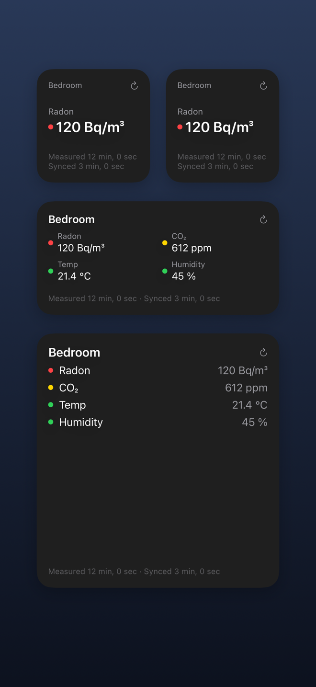
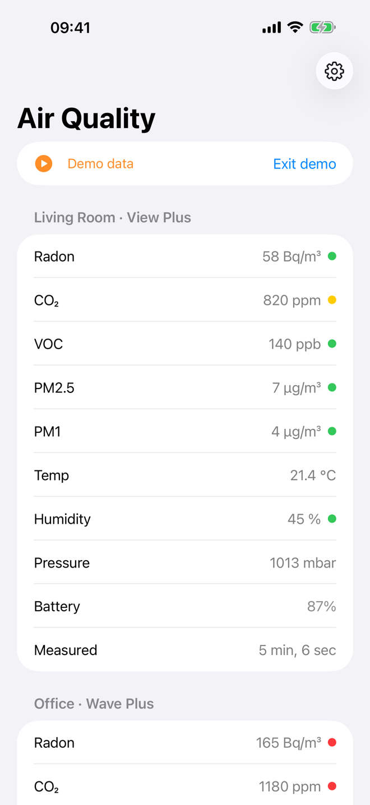
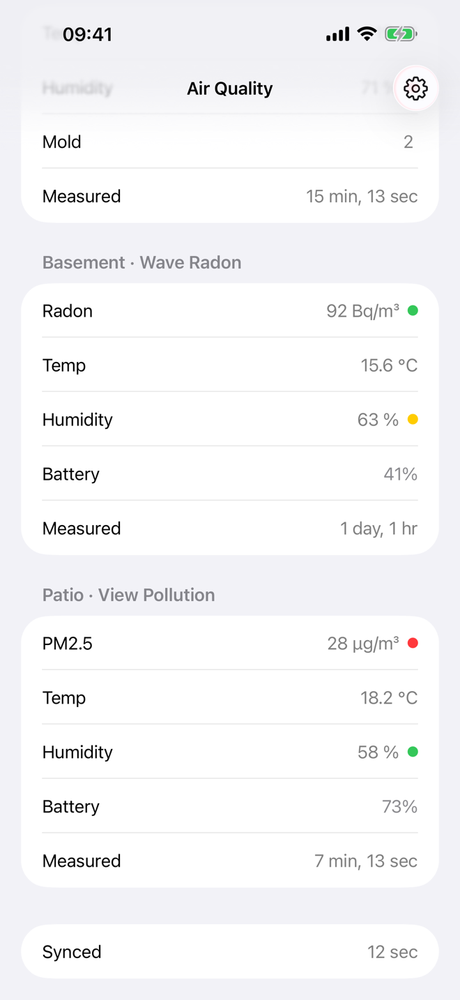
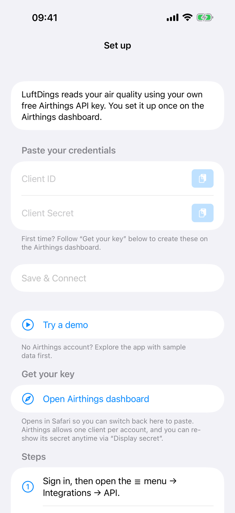
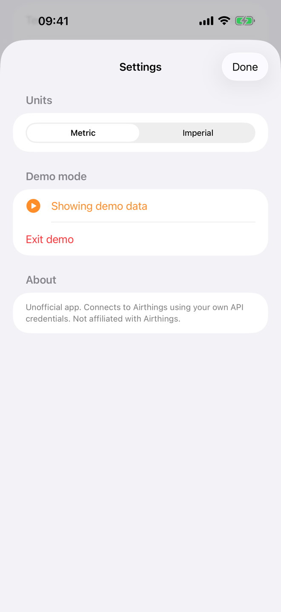

Widgets, finally
Small, medium and large Home Screen widgets showing the sensors that matter to you — each with a clear “last updated” time.
Every reading
Radon, CO₂, VOC, temperature, humidity and air pressure — plus PM2.5 and PM1 on supported devices like the View Plus.
Works with WiFi devices
Reads your data through the official Airthings Cloud API, so it works across all device types — including the WiFi View series.
Private by design
No account with us, no backend, no tracking. Your credentials stay in your iPhone’s Keychain.
Works with
Current-value devices on your Airthings account — latest readings only (no history):
- View Plus
- View Pollution
- Wave Plus
- Wave Radon
- Wave Mini
How it connects
LuftDings is free and reads your sensor data using your own free Airthings API key (Bring Your Own API Key) — the same key that comes with every Airthings account. You create it once on the Airthings dashboard, the app walks you through it, and from then on it talks directly to the Airthings Cloud API from your iPhone. Your credentials stay in your device’s Keychain and never touch any server we run.
Get the app
LuftDings is heading to the App Store. Have a question?